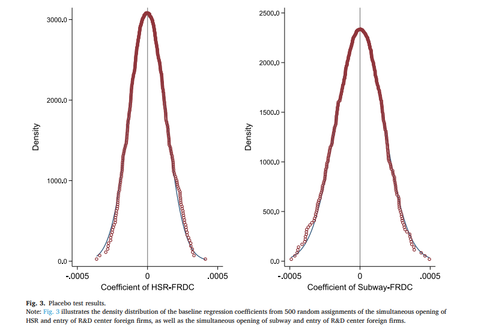
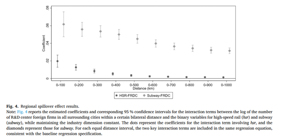

Despite enormous literature on R&D activities and innovation, the role of transportation and innovation is still to be examined. Recent studies show that high-speed rails (HSR), subways, and highways all have a substantial effect on R&D activities and innovations. Understanding these channels is crucial for policymakers seeking to foster innovation-driven growth.
How High-Speed Rail Drives Innovation in China
To examine this relationship, consider China and its high-speed rail network. With over 45,000 km of operational rails, China has the most operational train transportation system globally. A contemporary study by Zhang and Cui (2025) reveals how HSR lines improve resource allocation through increased labor flexibility—workers have better opportunities to be matched with more suitable jobs. This enhanced labor matching leads firms to access greater human capital, which directly contributes to increased R&D investments.
Another key finding from their work is that HSR creates more efficient financial systems by making it easier for banks, firms, and investors to meet together and secure credit approvals needed for producing innovative outputs. The proximity and connectivity enabled by rail infrastructure thus unlock financial resources that previously remained inaccessible.
HSR lines improve resource allocation through increased labor flexibility, as workers have better opportunities to be matched with more suitable jobs.
Two Main Pathways: Knowledge Spillovers and Cost Reduction
Previous studies identify two main mechanisms through which transportation and infrastructure influence innovation. The first is knowledge spillovers. When people can transport between areas, they also transport ideas—which return in much more enhanced and developed form. This brings forth cooperation between firms and expands their capacity for innovation. The second mechanism is decreased travel expenses. With reductions in cost, people have greater mobility, which once again contributes to cooperation and additional output.
One more noteworthy point is that the demand for innovation can increase when railway systems merge internal and external markets through trade. Donaldson and Hornbeck (2016) document this dynamic in the context of American railroads, showing how infrastructure opening new market access spurs innovation and economic growth.
Subways and Technology Spillovers
Beyond high-speed rail, subway systems also play a critical role. Li et al. (2025) examine HSR alongside subways and find a significant increase in technology spillovers from foreign R&D firms when HSR lines and subways are present. Similar to HSR, subways lower the distance between regional firms and R&D firms, easing labor movements and increasing access to technology. Their analysis reveals a striking finding: if the area has high-quality institutions—and thus better implementation of law—and if the rate of competition is high, then the effect of HSR and subways on technology spillovers multiplies substantially. This effect is particularly pronounced in developing and high-technology industries.


Highways and Measurable Innovation Gains
Lastly, we can examine the research of Mao et al. (2024), which focuses on Chinese highways rather than railways. They present several essential findings about the relationship between highway construction and firm innovation. The results include a positive relationship between highway construction and firm innovation: with each new highway, patent applications by firms increase by more than 1.5%. Additionally, there is a 0.7% increase in firm patent applications when one more highway intersects with another. When compared internationally, between countries with and without highways, firms in countries with highways increase their patent applications by nearly 4% when a new highway is available.
The mechanisms underlying highway effects mirror those for HSR and subways: there is increased innovation by firms as accessing knowledge becomes easier. Furthermore, when there are more highways, firms can reduce their financial constraints to an important extent. Finally, it is well established that there is a negative relationship between labor wage distortions and the level of innovation. Highways, in this sense, have the potential to reduce these distortions by enabling workers to move more freely to higher-productivity regions.
Conclusion
R&D activities and innovation are affected by transportation infrastructures such as high-speed rails, subways, and highways through various channels. The two main mechanisms are knowledge spillovers—the transmission of ideas and technologies across regions—and cost reductions that enable greater mobility and market access. As policymakers and firms seek to boost innovation and economic growth, investment in transportation infrastructure emerges as a foundational tool that unlocks human capital, financial resources, and technological progress.
Selected references
- Zhang, X., & Cui, T. (2025). Transportation Infrastructure and Innovation: Evidence from China's High-Speed Railways. Sustainability, 17(22), 10004.
- Li, L., Liu, B., Sheng, B., & Wang, T. (2025). "A tale of two rails": Transportation infrastructure and technological spillovers from R&D center foreign firms. China Economic Review, 90, 102367.
- Mao, N., Sun, W., & Zhang, L. (2024). The innovation effects of transportation infrastructure: Evidence from highways in China. Economics of Transportation, 38, 100352.
- Donaldson, D., & Hornbeck, R. (2016). Railroads and American Economic Growth: A "Market Access" approach. The Quarterly Journal of Economics, 131(2), 799–858.